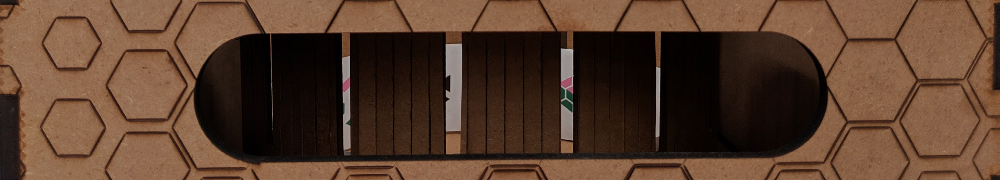
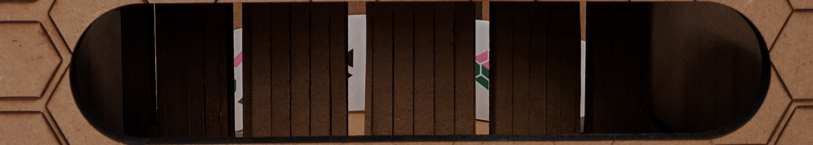
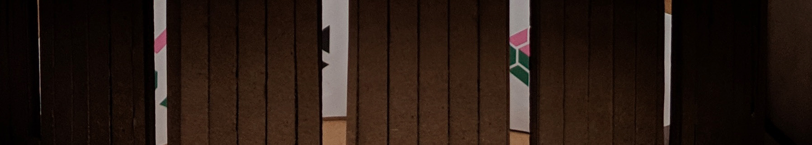

This project was an exploration of how perspective can change everything in perception. Guided by forces of innate curiosity, the box leads viewers on suggested path that follows along the same phases of good storytelling: exposition, rising action, climax, falling action, denouement. By extracting the human psyche, all of the functions of the box are automatically triggered by the human. When seen from the outside, a cube of hexagons seems to contradict the desire to pair like with like. However, when looking through the right perspective, everything begins to make sense. In another attempt to further stress the importance of perspective, even when the box is in action, the visual presentation would only make sense when viewed from a certain position.
The operation of this box is guided by self intuition. There are no buttons and the operation is only triggered by the person and their presence at the suggested location. Furthermore, the box provides visual feedback to the viewer, letting them know that it is being triggered. Following the dramatic structure of storytelling, the box would tell the viewer a beautiful story.
1. Exposition: The background information is provided to the audience by the shape of the box and the exterior markings of the box. One can visually see the hexagonal pattern covering the cube, and the idea of contradiction is already interpreted. The viewer would also see a stagnant version of the animation, beginning to put together the connection that is being made between the two.
2. Rising action: The viewer is drawn closer and closer to the eye hole. Since the box can only be triggered when the face is immediately in front of the hole, the approach towards the viewing builds tension and excitement.
3. Climax: The box is triggered when the light sensor passes a certain threshold. The zoetrope begins spinning, and the image of understanding finally clicks everything in place.
4. Falling Action: The animation gradually fades in interest; while the viewer takes in the rest of the animation.
5. Denouement: When the viewer steps back away from the box, everything returns to a standstill. They are now in a cathartic understanding of all perspectives and the connections between them.



The construction of the outer box was done by gluing together 6 wooden panels of a cube. These panels were laser etched with a design built with rhino + grasshopper, in which the sizes of the hexagons were based on how close they were to a free flowing 3D curve. Holes were cut out in the panels to: allow light into the zoetrope and give a different perspective, let the viewer look at the zoetrope from the right perspective, allow light to be read from the photo-resistor, and lastly to plug the DC isolator into the wall.
The inside of the box is composed of 3 sections: a cardboard rack that holds the motor/zoetrope up, a cardboard frame to organize electronics, and a wooden half box to hide the messiness of the electronics.
The cardboard rack puts the motor and the zoetrope at the right vertical height that it just barely sits above the inside wooden box. It is easily moved to better access the cardboard frame of electronics below.
The cardboard frame of electronics holds pieces together so they do not rattle in the box or potentially disconnect from their wirings. This is an important part as there are many connections where the inputs of wires have to be precisely located.
The wooden half box is made of the same material as the outer box. It gives the box a raised floor feeling that hides the ugly wiring and innards of the electronic connections.
 FUTURISTIC INDIVIDUALITY
METHODICAL
EMPATHY
CONTACT
FUTURISTIC INDIVIDUALITY
METHODICAL
EMPATHY
CONTACT